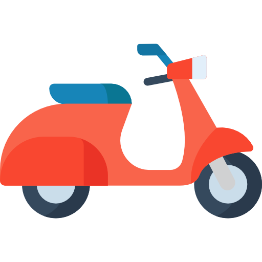

Főoldal
Előnyök
Munkatársaink
A KKNF, vagyis a KisKöbNagyFütyi, egy kezdeményezés, amely az alacsony hengerűrtartalmú robogókat népszerűsíti. Célja, hogy felhívja a figyelmet ezeknek a kis méretű, környezetbarát járműveknek az előnyeire, beleértve a gazdaságosságot és a környezetbarát működést. A KKNF közösségi eseményeket, túrákat és kampányokat szervez, hogy segítse az embereket a kisebb robogók használatában, és eloszlassa a velük kapcsolatos előítéleteket. Ennek a kezdeményezésnek köszönhetően egyre többen választják az alacsony hengerűrtartalmú robogókat a fenntarthatóbb és gazdaságosabb közlekedési megoldásként.
A kezdeményezés 2019-ben született meg, amikor a két alapító, Lord Rothschild Árpád és Dürüm Tivadar, lelkes robogós és környezetvédő, összefogtak a fenntartható közlekedés elősegítése érdekében. A két lelkes alapító úgy érezte, hogy az alacsony hengerűrtartalmú robogók sokkal több lehetőséget rejtenek, mint amennyire az emberek általában gondolnak.
A KisKöbNagyFütyi (KKNF) kezdetben tényleg az alacsony hengerűrtartalmú robogók népszerűsítését tűzte ki célul. Ám ahogy a mozgalom növekedni kezdett és egyre több támogatót gyűjtött, sötét titkok kezdtek körülnyílni az alapítók, Lord Rothschild Árpád és Dürüm Tivadar körül. A felhasználókat korábban teljesen elvarázsoló és optimista mozgalom mögött rejtőző sötét hatalomátvételi szándékok lassan napvilágot láttak.
Titkos érdekek hajtották a KKNF-et, és az alapítók valójában egy titkos társaság, az "Árnyak Földje" (Shadowland) agytrösztjének tagjai voltak. A KKNF létrehozásának valódi célja az volt, hogy kiterjesszék befolyásukat a városi közlekedés és a mobilitás területére. Az alapítók titkos manipulációs technikákkal, pszichológiai trükkökkel és kifinomult propagandával irányították a KKNF mozgalmat.
Az "Árnyak Földje" célja az volt, hogy fokozatosan átvegye a városok közlekedési rendszereit, és uralma alá hajtsa az emberek gondolkodását. A robogók népszerűsítése csak az első lépés volt a hatalomátvételi tervükben. A KKNF tagjai, akik hitték, hogy csupán egy fenntarthatóbb közlekedést népszerűsítő mozgalomban vesznek részt, nem sejtették, hogy valójában a manipuláció és az uralom eszközeivé váltak.
Dürüm Tivadar
Dürüm Tivadar, a KKNF egyik alapítója, kreatív szellem, aki a robogózásban látja az összeköttetést az ember és a környezet között. Tivadar elkötelezett az innováció és a közösségi közlekedési megoldások iránt, és hisz abban, hogy az alacsony hengerűrtartalmú robogók egyértelműen hozzájárulnak a városi mobilitás és a környezetvédelem javításához.
Lord Rothschild Árpád
Lord Rothschild Árpád, a KKNF másik alapítója és vezetője, egy szenvedélyes robogós, aki mindig is a fenntartható közlekedés híve volt. Gazdasági és környezetvédelmi háttérrel rendelkezik, és hisz abban, hogy az alacsony hengerűrtartalmú robogók segítségével sokkal fenntarthatóbbá és élhetőbbé tehetjük városainkat.